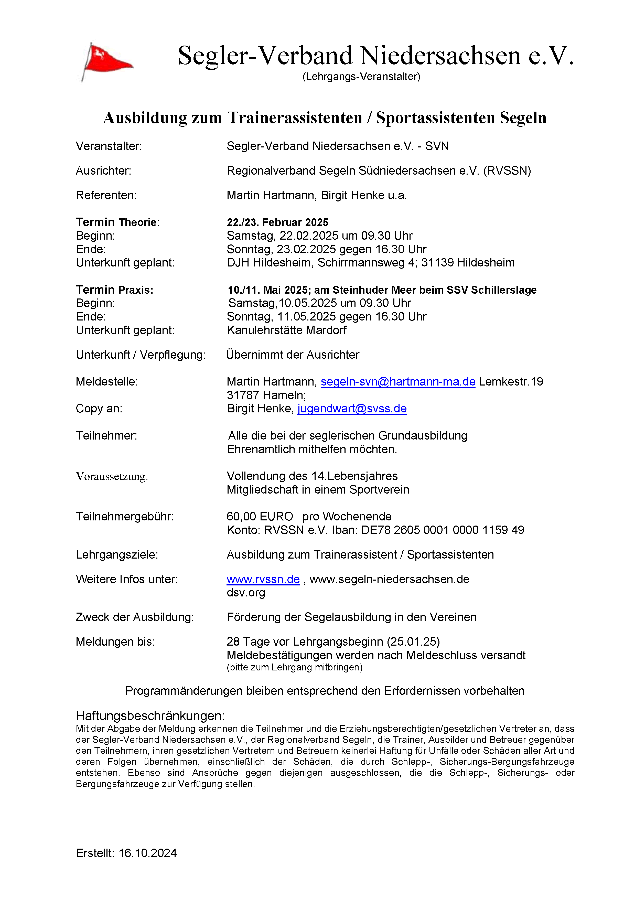
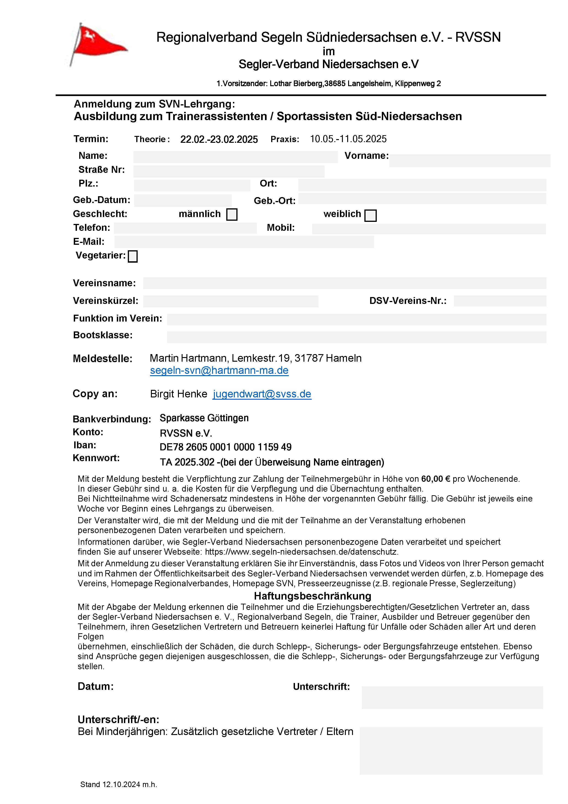
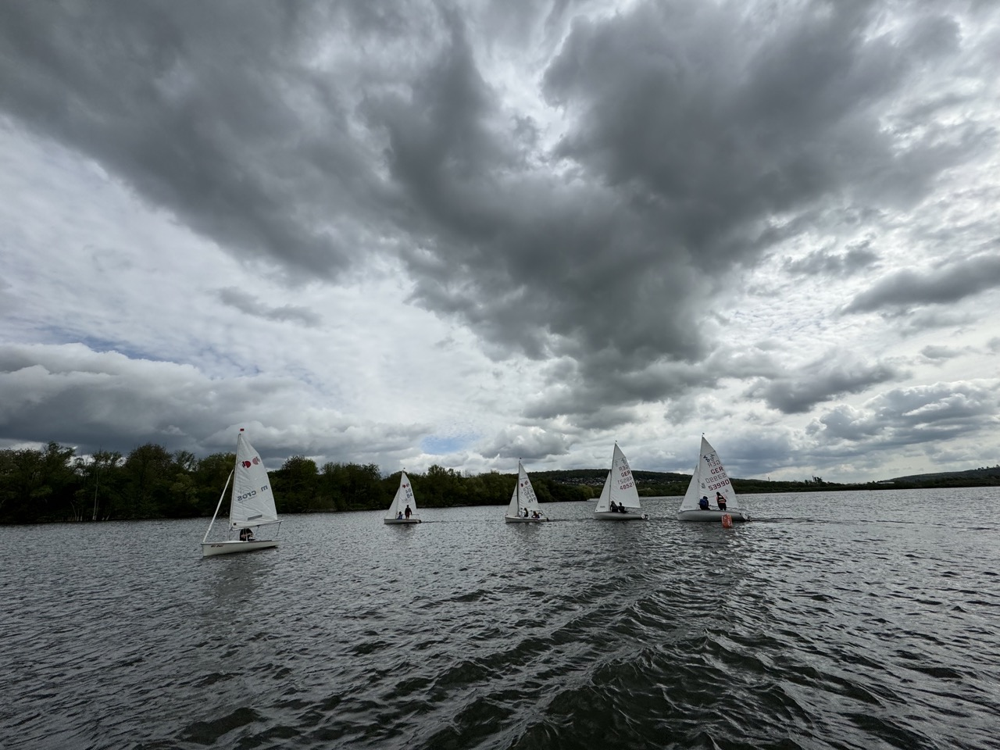

AKTUELL






Regatta
23. Oktober 2024
Oberbürgermeisterpokal in Braunschweig am Südsee – Lennart Loch berichtet
Bei der Opti-B Regatta Oberbürgermeisterpokal von den Naturfreunden Braunschweig auf dem Südsee belegte Lennart Loch den dritten Platz und schrieb uns seine Eindrücke:
Am ersten Tag war es sehr windig. Allerdings war der Wind sehr böig. Die Wettfahrten waren trotzdem sehr schön und haben Spaß gemacht. Die Wettfahrtleitung war gerecht und hat einen guten Kurs gelegt. Am zweiten Tag hatten wir leider weniger Wind. Trotzdem war die Wettfahrt toll, wir haben immer wieder am Begleitboot angelegt und hatten viel Spaß! Insgesamt hat mir die Regatta sehr gut gefallen und ich hoffe, dass ist diese Regatta noch sehr lange gibt. Das Essen war total lecker. Es gab Spaghetti und Wackelpudding:)
Von Lennart Loch

Ein wilder Mix zum Saisonstart an der Innersten Talsperre
Verschiedenste Einhandboote (alle Laser ähnlich), Segler und Seglerinnen im Alter von 12 – 64 und erst schwacher Wind der sich dann noch ordentlich steigerte. Das Leistungsniveau – ebenfalls komplett unterschiedlich. Unser Trainer Toshi im RVSSN wagte den Spagat. Neben den vielen theoretischen Einheiten ging es auch genauso auch aufs Wasser. Bei den vielen Tonnenrundungen gellte immer wieder das Wort „und Pump“ durch das Tal, welches das anpumpen und aufrichten des Bootes zum richtigen Zeitpunkt signalisieren sollte. Bei dem leckeren Mittagessen wurden zur großen Pause die Erfahrungen untereinander ausgetauscht. Auch wenn es hier und da ein paar Materialschwächen gab, waren die Teilnehmer durchweg sehr zufrieden mit der Lokation, dem Essen und vor allem aber mit ihren eigenen erbrachten Leistungen. Einen großen Dank an Toshi, Heike und Chrissi, die die Hauptakteure bei dem ganzen geschehen waren.
Optimistenregatta
erste Juniwochenende
WYCA-Opti-Cup auf dem Allersee
Am ersten Juniwochenende fand die diesjährige Optimistenregatta, der WYCA-Opti-Cup, auf dem Allersee statt.
Wie in den Vorjahren war die Regatta als Opti B Ranglistenregatta ausgeschrieben. Die Wettfahrtleitung übernahmen Mario und Hilmar, die sogar auf ihr Vortraining zur Deutschen Meisterschaft der Conger am Dümmer verzichtetet hatten und die Conger-Vermessung „so nebenbei erledigten“ -Respekt und vielen Dank dafür!
Vielen Dank auch an alle Unterstützer, die sich bereits im Vorfeld und am Wochenende um die Erfordernisse einer Regatta kümmerten: Getränke, Grillgut und Benzin einkaufen, Salate und Kuchen vorbereiten, Manage2Sail füttern, Pram, Bojen und Flaggen, Regattaleitung, Aufbauen, Aufräumen, Preise, usw.
Der Samstag startete mit einem kleinen Schreck. Der Pramschlüssel war verschollen, aber gut, dass es Mitglieder mit Einbrecherqualitäten gibt ;).
16 Segler reisten pünktlich mit elterlicher (und Toshis) Unterstützung an, sogar Segler von der Bigge, dem Dümmer und ZSK waren vertreten. Bei der Abfrage wurde schnell klar, dieses Jahr waren im Gegensatz zum Vorjahr keine Regattaeinsteiger am Start.
Das Wetter spielte entgegen zwischenzeitlicher Voraussagen grandios mit, so dass bereits am Sonnabend 4 spannende und faire Läufe bei recht konstanten 4 Bft. und Sonne gesegelt werden konnten. Im Anschluss war sogar noch Zeit für die Eltern-/ Trainer-/ Geschwisterregatta, bevor der Regattatag mit Bratwurst, Steak und Salaten ausklang.
Am Sonntag endete die Regatta mit einem finalen 5. Lauf.
Lukas vom Yacht-Club-Lister am Biggesee gewann mit 4 ersten Plätzen die Regatta, herzlichen Glückwunsch. Die weite Anreise hatte sich somit gelohnt. Platz 2 ersegelte sich Thore von den Naturfreunden Braunschweig, den 3. Platz erreichte Valérie vom Zwischenahner Segelclub. Sie erhielt dann auch den Pinguin und darf somit den Bericht für die DODV schreiben.
Die 3 WYCA Segler Jan, Yannik und Tomek segelten ein letztes Mal die Optiregatta „just 4 fun“ mit. Sie sind „aus dem Opti gewachsen“ und werden nun 420er und ILCA segeln.
Mal schauen, ob in dieser Saison noch Optikinder den Weg in die Vereine der Region finden, die Lust aufs Segeln haben. Es wäre schön, wenn auch nächstes Jahr ausreichend Meldungen in Opti B für Regatten zusammenkommen.
Breitensport Training
12.-14.4.2024
Breitensport Training für Teenies und 420er auf dem Northeimer Kiessee
Vom 12.4.-14.4.2024 wurde über den RVSSN ein Breitensporttraininng für Teeny und 420er angeboten. Trainerin Birgit Henke vom SVSS konnte mit Sven Oskar Thießen (NSC) 11 Kindern und Jugendlichenrvssn, im Alter von 10-17 Jahren aus drei Vereinen, bei schönstem Segelwetter Regattasegeln beibringen. Neben Bewegungsabläufen bei Wenden, Halsen und Starts, wurde für die erfahreneren Segler*innen das Spisegeln eifrig trainiert.
Am Freitag gab es nach dem Aufbau und Kennenlernen ein Einschätzungssegeln mit anschließendem Grillabend. Samstag Morgen ab 10:00 Uhr hieß es dann Training, Training, Mittagessen, Training, Training, Abendessen, Training. Sonntag Morgen 10:00 Uhr ging es munter weiter mit Training, Training, Mittagessen, Training, Abbau, Nachbesprechung, Abendsnack und Verabschiedung.
Fazit der Kids und Trainer: Tolles Wetter, viel Spaß, viel gelernt und super Essen! (Wiederholung gewünscht!)
Herzlichn Dank an die top Verpflegung der Küchencrew um Knut Bernotat und an Birgit Henke für das Training!

Breitensport Training
15.-16.8.2023
Breitensport Training für Teenies und 420er auf dem Seeburger See
Ende der Sommerferien, am 15./16. August 2023, freuten sich die Segler auf ein gemeinsames Training. So waren auch 4 Teenies fürs Training bei der Segler-Vereinigung Seeburger See e.V. gemeldet. Dabei waren Segler vom GSC, NSC und der SVSS.
Das Wetter war topp, nur der Wind war doch sehr dürftig. Durch die ständigen Winddreher war es sehr schwierig die Tonnen entsprechend den Regattaanforderungen zu runden. Einige Male mussten wir die Richtung ändern. Wichtig war diesen wenigen Wind doch noch für den Vortrieb zu nutzen.
Nach der gemeinsamen Mittagspause kam eine leichte Brise auf und wir konnten auch mit Spinnaker auf einem Up-and Down üben. Das Setzen und Bergen klappte bei den Teams schon recht gut, das Segeln mit Spinnaker wurde immer schwieriger, da der Wind seinen Dienst quittierte. Zur Abkühlung gab es dann noch Kenterübungen. Das freute die Teilnehmer- stolz richteten die Segler ihr Boot immer wieder auf und sie waren auch immer schneller wieder im Boot.
Auch der 2. Tag fing morgens mit wenig Wind an, doch so langsam entwickelte sich ein bisschen Thermik, also schnell aufs Wasser zum praktischen Üben. So konnte jeder ein paar Runden trainieren. Anschließend versuchten wir noch das Rückwärtssegeln. Zuerst ging gar nichts und alle meckerten - doch erst in den Wind, dann Pinne gerade und danach das Segel back halten und schon konnten alle auch längere Strecken rückwärtsfahren. Anschließend ging es wieder in den Hafen zum Mittagessen.
Beim Mittagessen wünschten sich die Segler noch einmal Kenterübungen – klar bei diesem Wetter ideal. Doch zuerst mussten noch Starts geübt werden. Die leichte Brise sorgte für den Vortrieb und schon klappte es pünktlich an der Linie zu sein, anschließend kurze Startkreuz und mit Spi zurückkommen. Ein Team probierte mal mit Wind von Backbord zu starten, da wurden aber die anderen Segler gleich aktiv und forderten ihren Raum ein.
Danach gab es noch freies Segeln mit Kenterübungen – da wurde es richtig schwer die Boote und Segler vom Wasser zu bekommen. Am Ende gab es noch eine Nachbesprechung – alle haben viel gelernt und die Boote können gleich zur Regatta am See liegen bleiben. Nur die Eltern mussten ein wenig auf ihre Kinder warten – das war aber ok.
Birgit Henke
Trainer C-L
Graf Isang Cup
26.-27.8.2023
Teeny und 420er Regatta am Seeburger See in Südniedersachsen.
Am Samstag früh sah unser Vereinsgelände in Bernshausen am Seeburger See außergewöhnlich belebt aus: übersät mit den Trailern und Booten unserer Gäste und zahlreichen geschäftigen Menschen beim Aufriggen!
Insgesamt 11 Boote der 420er Klasse und 10 Teenys starteten am Samstag zu 4 Läufen und am Sonntag zu einem Lauf.
Das durchgehend reichhaltig bestückte Buffet mit heißen und kalten Getränken, Kuchen und Salaten bereicherte die beiden Segeltage und am Samstag Abend gab außerdem jede Menge Gegrilltes.
Am Samstag war uns eine relativ beständige Windstärke 3 beschert – mit den auf unserem Revier üblichen Schwankungen und Drehungen. Nur während des vierten Laufes lies der Wind deutlich nach.
Für mich persönlich war dieser vierte Lauf der lehrreichste und das Highlight des Wochenendes.
Mit meiner sehr überschaubaren Regattaerfahrung als Steuermann und bisher beträchtlichem Respekt vor engen Pulks von Booten, traute ich mich hier zum erstem Mal mitten ins Getümmel an der Startlinie.
Und am Ende dieses Laufes hatten wir dann noch einen extrem interessanten Zweikampf mit einem anderen Boot um den Innenraum an der Leeboje. Durch den sehr schwachen Wind zu dieser Zeit, verlief das alles extrem langsam und schön nachvollziehbar. Wir hatten auf der Downwindstrecke von hinten eine Überlappung im Luv hergestellt. Das andere Boot durfte uns also hochluven und tat das auch ausgiebig – offenbar mit dem Ziel, kurz vor Eintritt in die Zone die Richtung ändern und dann klar voraus sein zu können. Letztlich gelang dies jedoch nicht – wir konnten die Überlappung aufrecht erhalten und den Innenraum an der Boje für uns beanspruchen. Die ganze Szene war ein Musterbeispiel für eine Situation, in der es sich lohnt, Regel 17 und 18 verstanden zu haben.
Der Sonntag begann bei sonniger Totalflaute mit Warten auf den Wind. Dadurch war der Vormittag sehr entspannt und alle konnten nach Belieben Sonne, Kuchen und/oder Gespräche genießen.
Gegen 12:30 (?) kam Wind auf, der sich überraschenderweise schnell zu einer hohen Windstärke 3 entwickelte, so dass der letzte Lauf noch einmal richtig Spaß machte.
Die Stimmung war insgesamt sehr angenehm, es gab keine Proteste und – außer zwei Booten, die einen Frühstart hatten – keine Zwischenfälle.
Bei der Sieger-Ehrung gab es für alle teilnehmenden Crews ein nützliches Andenken in Form eines Schäkelöffners.
Bericht von Roland Nordeck
Die Regattaergebnisse stehen im Netz unter Manage2sail:
https://www.manage2sail.com/de-DE/event/GrafIsangCup2023#!/


 Segler-Vereinigung Seeburger See e.V.
Segler-Vereinigung Seeburger See e.V.
 Segler-Verein Braunschweig e. V.
Segler-Verein Braunschweig e. V.